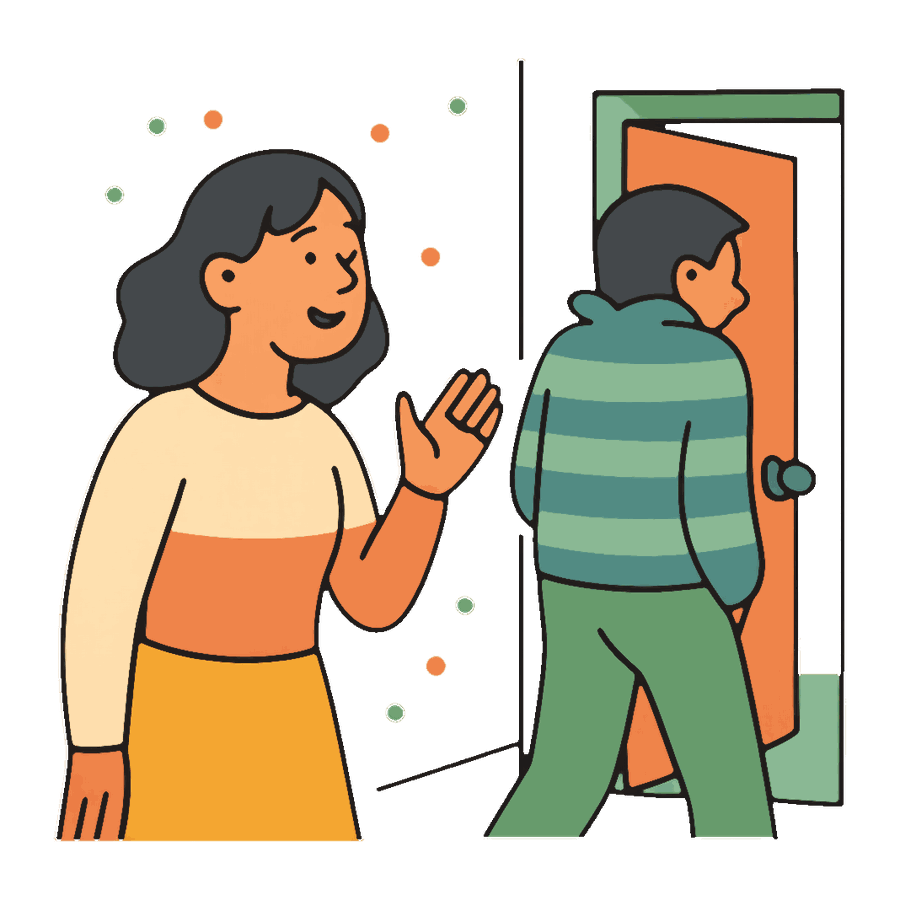

#Истории
Ссоры, в которых узнаёшь себя
Не только пары: соседи, подруги, коллеги, родители. Что стоит за каждой ссорой и с какой фразы начать разговор. Любую можно разобрать с Медиатором: вы рассказываете свою версию, второй человек свою, бот помогает услышать друг друга.
 Муж молчит после ссоры: почему он так делает и как начать разговор
Муж молчит после ссоры: почему он так делает и как начать разговор
 Сосед сверху шумит по ночам: как договориться без войны
Сосед сверху шумит по ночам: как договориться без войны
 Поссорилась с подругой: как помириться и стоит ли
Поссорилась с подругой: как помириться и стоит ли
 Коллега перекладывает на меня работу: как сказать об этом
Коллега перекладывает на меня работу: как сказать об этом
 Поссорилась с мамой: как помириться, если она не признаёт вину
Поссорилась с мамой: как помириться, если она не признаёт вину
 Постоянно ссоримся по мелочам: что это значит и как разорвать круг
Постоянно ссоримся по мелочам: что это значит и как разорвать круг
 Сосед паркуется на моём месте: как договориться, а не воевать
Сосед паркуется на моём месте: как договориться, а не воевать
 Соседка по квартире не убирает: как договориться о быте без скандала
Соседка по квартире не убирает: как договориться о быте без скандала
 Как помириться после сильной ссоры, пока обида не застыла
Как помириться после сильной ссоры, пока обида не застыла
 Как извиниться так, чтобы это сработало
Как извиниться так, чтобы это сработало
 Как правильно ссориться: 6 правил, чтобы конфликт не разрушал пару
Как правильно ссориться: 6 правил, чтобы конфликт не разрушал пару
 Онлайн-медиатор для пары: как это работает и кому помогает
Онлайн-медиатор для пары: как это работает и кому помогает
 Постоянно ссоримся из-за денег: как договориться о бюджете
Постоянно ссоримся из-за денег: как договориться о бюджете
 Муж вечно в телефоне: как сказать, чтобы он услышал
Муж вечно в телефоне: как сказать, чтобы он услышал
 Как перестать кричать друг на друга: что делать в момент срыва
Как перестать кричать друг на друга: что делать в момент срыва

Партнёр уходит от разговора: что такое каменная стена и как её обойти Парень не пишет после ссоры: писать ли первой и что написать
Подросток хлопает дверью: как поговорить с ним без крика
Парень не пишет после ссоры: писать ли первой и что написать
Подросток хлопает дверью: как поговорить с ним без крика
Не нашли свою ситуацию?
Расскажите её боту как есть. Он разберёт именно вашу ссору, а не типичную: что задело, что происходит с партнёром и с какой фразы начать. Первый разбор бесплатный.
Разобрать ссору бесплатно